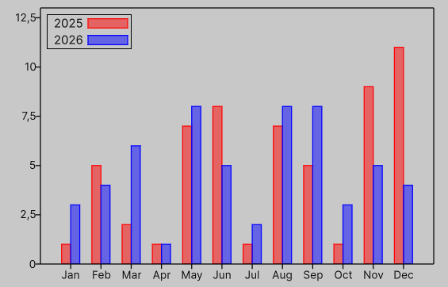

Bar plot demo
Below is a simple demo showing how to use PlotWithBars to create a bar plot.

var graph = new Graph
{
XAxis = { Min = -1, Max = 12,
Tics = Tics.Manual(new Tic[]
{
(00, "Jan"), (01, "Feb"), (02, "Mar"),
(03, "Apr"), (04, "May"), (05, "Jun"),
(06, "Jul"), (07, "Aug"), (08, "Sep"),
(09, "Oct"), (10, "Nov"), (11, "Dec"),
}) },
YAxis = { Min = 0, Max = 13 },
Theme =
{
Key = { Position = KeyPosition.InTopLeft },
Grid = { Display = DisplayStyle.None },
Tics =
{
Direction = TicsDirection.Out,
Bits = (int)(BorderBits.Left | BorderBits.Bottom)
}
},
style = { height = 300, width = 450 },
};
graph.PlotWithBars(new float2[]
{
new(0, 1),
new(1, 5),
new(2, 2),
new(3, 1),
new(4, 7),
new(5, 8),
new(6, 1),
new(7, 7),
new(8, 5),
new(9, 1),
new(10, 9),
new(11, 11),
}, width: 0.3f, anchor: BarAnchor.Right, title: "2025");
graph.PlotWithBars(new float2[]
{
new(0, 1 + 2),
new(1, 5 - 1),
new(2, 2 + 4),
new(3, 1 + 0),
new(4, 7 + 1),
new(5, 8 - 3),
new(6, 1 + 1),
new(7, 7 + 1),
new(8, 5 + 3),
new(9, 1 + 2),
new(10, 9 - 4),
new(11, 11 - 7),
}, width: 0.3f, anchor: BarAnchor.Left, title: "2026").SetStyle(3);